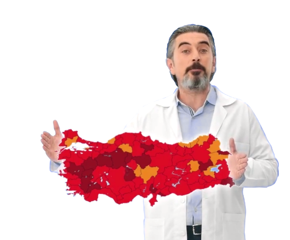

<!DOCTYPE html>
<html lang="tr">

<head>
    <meta charset="UTF-8" />
    <meta name="viewport" content="width=device-width, initial-scale=1.0" />
    <meta http-equiv="X-UA-Compatible" content="ie=edge" />
    <title>Calgon | makineminomru.com</title>
    <link rel="stylesheet" href="dist/mo.min.css" />
</head>

<body>
    <div id="fullpage">
        <header class="mo-header">
            <a href="/" class="mo-header-link">
                
            </a>
        </header>
        <div class="section welcome">
            <div class="container">
                <div class="row no-gutters d-flex justify-content-center vh-100 align-items-end">
                    <div class="col-10">
                        <div class="welcome-inner">
                            <div class="animate__animated animate__fadeInLeft welcome-left">
                                <h1 class="welcome-title">Hoş geldiniz.</h1>
                                <p class="welcome-text">
                                    Makinenizin <strong>gerçek yaşını</strong> öğrenmek için soruları yanıtlayın.<br>
                                    Soruları sadece <strong>1 dakika</strong> içinde cevaplayın,
                                </p>
                                <h2 class="welcome-info">
                                    özel indirimleri ve fırsatları kaçırmayın.
                                </h2>
                                <p class="welcome-modal-text"><a href="javascript:;" class="js-welcome-modal" data-bs-toggle="modal" data-bs-target="#aydinlatmaMetni">Aydınlatma Metni</a>’ni okudum.</p>

                                <a href="javascript:;" class="js-goto-next-question btn btn-lg welcome-btn-goon">TESTE BAŞLAYIN</a>
                            </div>
                            
                        </div>
                        
                    </div>
                </div>
            </div>
        </div>
        <!-- question 1 -->
        <div class="section q q1">
            <div class="container">
                <div class="row no-gutters d-flex justify-content-center vh-100 align-items-end">
                    <div class="col-10">
                        <div class="q-inner">
                            <div class="q-item q-item--left">
                                <div class="q-item-order">1</div>
                                <h2 class="q-item-title">Hangi şehirde <br> yaşıyorsunuz?</h2>
                                <div class="q-item-answer">
                                    <select name="Sehir" id="city-select">
                                        <option value="0">Lütfen yaşadığınız şehri seçin</option>
                                        <option value="1">Adana</option>
                                        <option value="2">Adıyaman</option>
                                        <option value="3">Afyonkarahisar</option>
                                        <option value="4">Ağrı</option>
                                        <option value="5">Amasya</option>
                                        <option value="6">Ankara</option>
                                        <option value="7">Antalya</option>
                                        <option value="8">Artvin</option>
                                        <option value="9">Aydın</option>
                                        <option value="10">Balıkesir</option>
                                        <option value="11">Bilecik</option>
                                        <option value="12">Bingöl</option>
                                        <option value="13">Bitlis</option>
                                        <option value="14">Bolu</option>
                                        <option value="15">Burdur</option>
                                        <option value="16">Bursa</option>
                                        <option value="17">Çanakkale</option>
                                        <option value="18">Çankırı</option>
                                        <option value="19">Çorum</option>
                                        <option value="20">Denizli</option>
                                        <option value="21">Diyarbakır</option>
                                        <option value="22">Edirne</option>
                                        <option value="23">Elazığ</option>
                                        <option value="24">Erzincan</option>
                                        <option value="25">Erzurum</option>
                                        <option value="26">Eskişehir</option>
                                        <option value="27">Gaziantep</option>
                                        <option value="28">Giresun</option>
                                        <option value="29">Gümüşhane</option>
                                        <option value="30">Hakkâri</option>
                                        <option value="31">Hatay</option>
                                        <option value="32">Isparta</option>
                                        <option value="33">Mersin</option>
                                        <option value="34">İstanbul</option>
                                        <option value="35">İzmir</option>
                                        <option value="36">Kars</option>
                                        <option value="37">Kastamonu</option>
                                        <option value="38">Kayseri</option>
                                        <option value="39">Kırklareli</option>
                                        <option value="40">Kırşehir</option>
                                        <option value="41">Kocaeli</option>
                                        <option value="42">Konya</option>
                                        <option value="43">Kütahya</option>
                                        <option value="44">Malatya</option>
                                        <option value="45">Manisa</option>
                                        <option value="46">Kahramanmaraş</option>
                                        <option value="47">Mardin</option>
                                        <option value="48">Muğla</option>
                                        <option value="49">Muş</option>
                                        <option value="50">Nevşehir</option>
                                        <option value="51">Niğde</option>
                                        <option value="52">Ordu</option>
                                        <option value="53">Rize</option>
                                        <option value="54">Sakarya</option>
                                        <option value="55">Samsun</option>
                                        <option value="56">Siirt</option>
                                        <option value="57">Sinop</option>
                                        <option value="58">Sivas</option>
                                        <option value="59">Tekirdağ</option>
                                        <option value="60">Tokat</option>
                                        <option value="61">Trabzon</option>
                                        <option value="62">Tunceli</option>
                                        <option value="63">Şanlıurfa</option>
                                        <option value="64">Uşak</option>
                                        <option value="65">Van</option>
                                        <option value="66">Yozgat</option>
                                        <option value="67">Zonguldak</option>
                                        <option value="68">Aksaray</option>
                                        <option value="69">Bayburt</option>
                                        <option value="70">Karaman</option>
                                        <option value="71">Kırıkkale</option>
                                        <option value="72">Batman</option>
                                        <option value="73">Şırnak</option>
                                        <option value="74">Bartın</option>
                                        <option value="75">Ardahan</option>
                                        <option value="76">Iğdır</option>
                                        <option value="77">Yalova</option>
                                        <option value="78">Karabük</option>
                                        <option value="79">Kilis</option>
                                        <option value="80">Osmaniye</option>
                                        <option value="81">Düzce</option>
                                    </select>
                                </div>
                            </div>
                            
                        </div>
            
                    </div>
                </div>
            </div>
        </div>
        <!-- question 2 -->
        <div class="section q q2">
            <div class="container">
                <div class="row no-gutters d-flex justify-content-center vh-100 align-items-end">
                    <div class="col-10">
                        <div class="q-inner">
                            
                            <div class="q-item q-item--right">
                                <div class="q-item-order q-item-order--right">2</div>
                                <h2 class="q-item-title">Çamaşır makineniz <br> kaç yıllık?</h2>
                                <div class="q-item-answer">
                                    <select name="machine-age" id="machine-age-select">
                                        <option value="">Lütfen makine yaşını seçin</option>
                                        <option value="1">1 Yaşında</option>
                                        <option value="2">2 Yaşında</option>
                                        <option value="3">3 Yaşında</option>
                                        <option value="4">4 Yaşında</option>
                                        <option value="5">5 Yaşında</option>
                                        <option value="6">6 Yaşında</option>
                                        <option value="7">7 Yaşında</option>
                                        <option value="8">8 Yaşında</option>
                                        <option value="9">9 Yaşında</option>
                                        <option value="10">10 ve üzeri</option>
                                    </select>
                                </div>
                            </div>
                        </div>
            
                    </div>
                </div>
            </div>
        </div>
        <!-- question 3 -->
        <div class="section q q3">
            <div class="container">
                <div class="row no-gutters d-flex justify-content-center vh-100 align-items-end">
                    <div class="col-10">
                        <div class="q-inner">
                            <div class="q-item q-item--left">
                                <div class="q-item-order">3</div>
                                <h2 class="q-item-title">Çamaşır makinenizihaftada<br>kaç kez kullanıyorsunuz?</h2>
                                <div class="q-item-answer">
                                    <select id="how-often-select">
                                        <option value="">Lütfen yıkama sayınızı seçin</option>
                                        <option value="1">1</option>
                                        <option value="2">2</option>
                                        <option value="3">3</option>
                                        <option value="4">4</option>
                                        <option value="5">5</option>
                                        <option value="6">6</option>
                                        <option value="7">7</option>
                                        <option value="8">8</option>
                                        <option value="9">9</option>
                                        <option value="10">10</option>
                                    </select>
                                </div>
                            </div>
                            
                        </div>
            
                    </div>
                </div>
            </div>
        </div>
        <!-- question 4 -->
        <div class="section q q4">
            <div class="container">
                <div class="row no-gutters d-flex justify-content-center vh-100 align-items-end">
                    <div class="col-10">
                        <div class="q-inner q-item--right">
                            
                            <div class="q-item">
                                <div class="q-item-order q-item-order--right">4</div>
                                <h2 class="q-item-title">Çamaşırlarınızı hangi tür<br>deterjan ile yıkıyorsunuz?</h2>
                                <div class="q-item-answer">
                                    <div class="q-item-answer-items">
                                        <a href="javascript:;" data-value="1" class="js-goto-next-question btn q-item-answer-items-btn">Sıvı</a>
                                        <a href="javascript:;" data-value="2" class="js-goto-next-question btn q-item-answer-items-btn">Toz</a>
                                        <a href="javascript:;" data-value="3" class="js-goto-next-question btn q-item-answer-items-btn">Her ikisi de</a>
                                    </div>
                                </div>
                            </div>
                        </div>
        
                    </div>
                </div>
            </div>
        </div>
    </div>
    <!-- aydinlatmaMetni modal -->
    <div class="modal fade" id="aydinlatmaMetni" data-bs-backdrop="static" data-bs-keyboard="false" tabindex="-1"
        aria-labelledby="aydinlatmaMetniLabel" aria-hidden="true">
        <div class="modal-dialog modal-dialog-scrollable">
            <div class="modal-content">
                <div class="modal-header">
                    <h5 class="modal-title" id="aydinlatmaMetniLabel">Kişisel Verilerin Korunması Hakkında Aydınlatma Bildirimi</h5>
                    <button type="button" class="btn-close" data-bs-dismiss="modal" aria-label="Close"></button>
                </div>
                <div class="modal-body">
                    <p>Bu bilgilendirme, 6698 sayılı Kişisel Verilerin Korunması Kanunu (“<strong>KVKK</strong>”) 10. maddesi gereğince ve
                        yasal zorunluluk nedeniyle yapılmaktadır.</p>
                    <p>Reckitt Benckiser EV ve Hijyen Ürünleri Anonim Şirketi (“<strong>RB</strong>”) olarak kişisel verilerinizin güvenliği
                        ve korunması hususlarına büyük bir önem göstermekteyiz. Bu bilinçle, RB olarak her türlü kişisel verinin 6698 sayılı
                        KVKK’ya uygun olarak işlenmesi ve muhafaza edilmesi konusuna azami hassasiyet göstermekteyiz.</p>
                    <p>KVKK’da belirtildiği üzere RB tarafından veya RB’nin talimatı ile işlenmekte olan kişisel veriler bakımından “Veri
                        Sorumlusu” sıfatıyla sorumlu olduğumuz bilincinde olarak, kişisel verilerinizi aşağıda izah edildiği şekilde ve
                        mevzuat tarafından izin verilen sınırlamalar çerçevesinde işlemekteyiz.</p>
                    <p><strong>Veri Sorumlusu&nbsp;</strong></p>
                    <p>KVKK uyarınca kişisel verileriniz “Veri Sorumlusu” olarak Reckitt Benckiser Ev ve Hijyen Ürünleri Anonim Şirketi
                        tarafından aşağıda açıklananlar kapsamında işlenebilecektir.</p>
                    <p><strong>Kişisel Verilerin Toplanması, İşlenmesi ve İşleme Amaçları</strong></p>
                    <p>Kişisel verileriniz, RB tarafından sağlanan <a href="https://makineminomru.net"
                            target="_blank">www.makineminomru.net</a> isimli web sitesi üzerinden otomatik olan yollarla ve doğrudan sizden
                        toplanacaktır.</p>
                    <p>Toplanan kişisel verileriniz, çamaşır makinenizin durumunu anlayabilmek adına size yönelteceğimiz sorular
                        aracılığıyla çamaşır makinenizin ömrünü ve kireç durumunu hesapladıktan sonra bu bilgileri ileride hazırlayacağımız
                        reklamları sizin tercihlerinize daha uygun şekilde sunabilmemiz amaçlarıyla işlenecektir. İnternet sitemizdeki
                        kirecin çamaşır makinelerine olan etkisine dair bilgilendirme ve tavsiyeleri değiştirip geliştirebilmemiz için de
                        kişisel verileriniz işlenecektir. Ayrıca, teknik servis desteği almak istediğinizde ilgili formu doldurarak bizimle
                        iletişime geçmeniz dahilinde de bu hizmeti size sunabilmek adına kişisel verileriniz işlenebilecektir. Ek olarak,
                        Calgon ürünlerimizin dijital ortamda yeniden pazarlama reklamlarını sizin teknik destek hizmeti sırasında
                        ilettiğiniz talep ve şikayetleriniz doğrultusunda geliştirip yenileyebilmemiz amaçlarıyla da kişisel verileriniz
                        işlenecektir. Son olarak, birtakım verileriniz web sitesinde yer alan çerezler aracılığı ile de toplanabilir ve
                        işlenebilir. Çerezler ile ilgili detaylı bilgi için lütfen <em>Çerez Politikamızı</em><em>&nbsp;</em>inceleyiniz.
                    </p>
                    <p>Toplanacak kişisel verileriniz arasında adınız, soyadınız, yaşadığını şehir ve ilçe, adresiniz, telefon numaranız, e
                        posta adresiniz ve makinenizin şikayetinin ne olduğu bilgisi yer alacaktır.</p>
                    <p>Toplanan kişisel verileriniz; hukuka ve dürüstlük kurallarına uygun, doğru ve gerektiğinde güncel, belirli, açık ve
                        meşru amaçlar için ve işlendikleri amaçla bağlantılı, sınırlı ve ölçülü olarak ve ilgili mevzuatta öngörülen veya
                        işlendikleri amaç için gerekli olan süre kadar muhafaza edilme ilkelerine uygun olarak işlenir.</p>
                    <p><strong>İşlenen Kişisel Verilerin Kimlere ve Hangi Amaçla Aktarılabileceği</strong></p>
                    <p>Toplanan kişisel verileriniz; 2. maddede belirtilen amaçlarla sınırlı olarak RB’nin yurtiçi ve yurtdışında bulunan
                        iştirakleri ve çözüm ortakları ile paylaşılabilecektir. Ayrıca iş ortaklarımız olan teknik servis şirketiyle de
                        kişisel verileriniz paylaşılacaktır.</p>
                    <p>Veri Sorumlusu, kişisel verilerinizi, yukarıda belirtilen amaçlar çerçevesinde gerekli güvenlik önlemlerin almak
                        kaydıyla, Türkiye içinde veya dışında bulunan sunucularda veya diğer elektronik ortamlarda işleyip saklayabilir.</p>
                    <p><strong>Kişisel Veri Toplamanın Yöntemi ve Hukuki Sebebi</strong></p>
                    <p>Kişisel verileriniz RB tarafından sağlanan <a href="https://makineminomru.net"
                            target="_blank">www.makineminomru.net</a> isimli web sitesi üzerinden toplanarak yukarıda yer verilen amaçlar
                        doğrultusunda aşağıda belirtilen hukuka uygunluk sebepleri çerçevesinde işlenecektir.</p>
                    <ul>
                        <li>Açık Rıza – KVKK m. 5/1</li>
                        <li>Veri Sorumlusu’nun meşru menfaati – KVKK m. 5/2 f</li>
                    </ul>
                    <p><strong>İlgili Kişi Olarak Haklarınız</strong></p>
                    <p>İlgili kişi olarak, haklarınıza ilişkin taleplerinizi, aşağıda düzenlenen yöntemlerle Veri Sorumlusu’na iletmeniz
                        durumunda, talebinizi niteliğine göre en kısa sürede ve en geç otuz gün içinde herhangi bir ücret talep etmeksizin
                        sonuçlandıracaktır. Ancak, Kişisel Verileri Koruma Kurulunca, başvurulara ilişkin bir ücret öngörülmesi durumunda,
                        belirlenecek ilgili ücret alınacaktır.</p>
                    <p>KVKK’nın 11. maddesine göre ilgili kişi olarak haklarınız şunlardır;</p>
                    <ol>
                        <li>Kişisel veri işlenip işlenmediğini öğrenme,</li>
                        <li>Kişisel verileri işlenmişse buna ilişkin bilgi talep etme,</li>
                        <li>Kişisel verilerin işlenme amacını ve bunların amacına uygun kullanılıp kullanılmadığını öğrenme,</li>
                        <li>Yurt içinde veya yurt dışında kişisel verilerin aktarıldığı üçüncü kişileri bilme,</li>
                        <li>Kişisel verilerin eksik veya yanlış işlenmiş olması hâlinde bunların düzeltilmesini isteme ve bu kapsamda
                            yapılan işlemin kişisel verilerin aktarıldığı üçüncü kişilere bildirilmesini isteme,</li>
                        <li>KVKK’ya ve ilgili diğer kanun hükümlerine uygun olarak işlenmiş olmasına rağmen, işlenmesini gerektiren
                            sebeplerin ortadan kalkması hâlinde kişisel verilerin silinmesini veya yok edilmesini isteme ve bu kapsamda
                            yapılan işlemin kişisel verilerin aktarıldığı üçüncü kişilere bildirilmesini isteme,</li>
                        <li>İşlenen verilerin münhasıran otomatik sistemler vasıtasıyla analiz edilmesi suretiyle kişinin kendisi aleyhine
                            bir sonucun ortaya çıkmasına itiraz etme,</li>
                        <li>Kişisel verilerin kanuna aykırı olarak işlenmesi sebebiyle zarara uğraması hâlinde zararın giderilmesini talep
                            etme&nbsp;</li>
                    </ol>
                    <p>Yukarıda belirtilen haklarınızı kullanmak ile ilgili talebinizi yazılı olarak Veri Sorumlusu’na
                        iletebilirsiniz.&nbsp;</p>
                    <p>KVKK’nın 13. maddesinin 1. fıkrası gereğince, yukarıda belirtilen haklarınızı kullanmak için ilgili talebinizi ekli
                        formu kullanarak Veri Sorumlusu’na iletebilirsiniz. Ekli formun kullanımı ve formun gönderileceği adres ile ihtiva
                        etmesi gereken bilgiler KVKK’ya göre belirlenmiş olup ilgili açıklamalar formda yer almaktadır.</p>
                    <p>Veri Sorumlusu KVKK’da olabilecek değişiklikler ve Kişisel Verileri Koruma Kurulu tarafından belirlenecek yöntemler
                        ile verilecek kararlar sebebi ile bu aydınlatma bildiriminde değişiklik yapma hakkını saklı tutmaktadır.</p>
                </div>
            </div>
        </div>
    </div>
    <script src="dist/mo.min.js" type="text/javascript"></script>
    
</body>

</html>